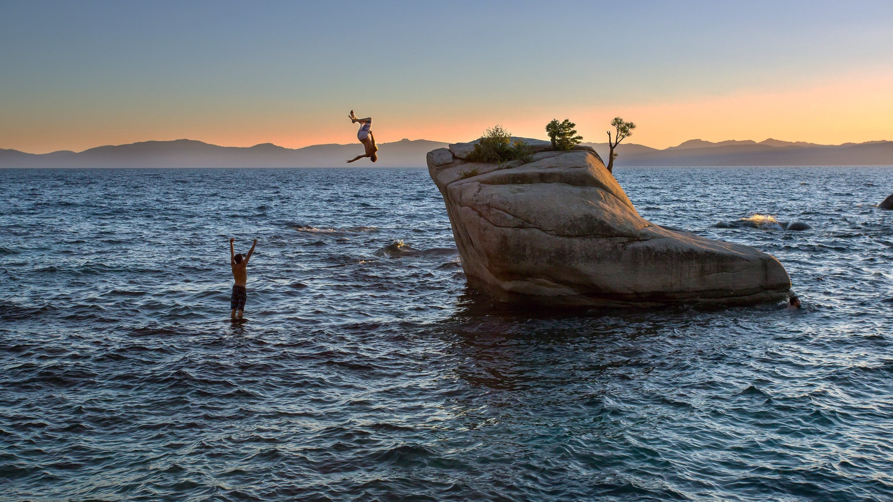

Du lịch không chỉ mang lại cho chúng ta những trải nghiệm mới mẻ, khám phá văn hóa và địa điểm thú vị, mà còn giúp chúng ta thoát khỏi cuộc sống bận rộn hàng ngày. Một chuyến du lịch dài sẽ mang đến cho bạn những kỷ niệm không thể nào quên. Mỗi tuần làm việc căng thẳng của tôi đã đến hồi kết, và tôi quyết định sắp xếp một chuyến du lịch dài để thư giãn. Tôi chọn đến Phú Quốc - hòn đảo duyên hải đẹp nhất miền Nam Việt Nam.

Trong suốt chuyến du lịch của mình, tôi đã có cơ hội thưởng thức những món ăn đặc sản địa phương như cá kho tộ, hấp hùng, rau muống xào tỏi, nước leo,… Tôi đã hòa mình vào không khí nhộn nhịp của chợ đêm và tham gia trò chơi câu cá, karaoke, đua xe trên biển. Bãi Sao - một trong những bãi biển đẹp nhât Phú Quốc đã khiến tôi say đắm vì phong cảnh tuyệt đẹp, với bãi cát trắng mịn và nước biển trong xanh. Đặc biệt, tôi đã có dịp tham quan Cơ Sở Khai Thác Ngọc Trai Phú Quốc và được chiêm ngưỡng những viên ngọc traí rực rỡ. Sau 7 ngày khám phá và trải nghiệm, tôi đã thật sự thoải mái và hạnh phúc. Chuyến đi của tôi đã kết thúc nhưng kỷ niệm và trải nghiệm sẽ mãi mãi in đậm trong trái tim.
Mùa Hè là khoảng thời gian lý tưởng để khám phá những vùng đất mới. Nếu bạn muốn trải nghiệm một chuyến du lịch dài, các vùng đất cát trắng và biển xanh vẫn luôn là lựa chọn không bao giờ hết thời. Một trong những điểm đến lý tưởng cho kỳ nghỉ dài ngày của bạn có thể là sa mạc Sahara ở châu Phi. Sa mạc này là không gian rộng lớn và không có con người sinh sống ở đó. Tuy nhiên, đó lại là điều khiến cho sa mạc Sahara trở nên đặc biệt. Bầu trời mênh mang dường như chạm đến làn da của bạn, còn đồi cát trải dài đến mắt thấy, mảnh đất hoang sơ màu nâu đỏ. Ngược lại, vào buổi tối, bầu trời lại tràn đầy ngập tràn ánh sáng của vô số ngôi sao huyền thoại. Đốm sáng trắng của mặt trăng cảm thấp xuống sa mạc, làm cho đường cong khói sương và mịn màng của cát hiện lên với cái nhìn đẹp tuyệt vời. Vô số cảnh tượng về trăng cùng đại dương bao phủ cảnh quan – sự huyền ảo mê hoặc, khiến cho bạn có cảm giác như đang được sống trong một thế giới khác. Khung cảnh này thực sự rất lãng mạn và không dễ dàng để lời miêu tả....
Trong chuyến du lịch dài ngày, tôi đã có cơ hội trải nghiệm điều tuyệt vời nhất trong cuộc đời mình. Tôi được khám phá những vùng đất mới, chiêm ngưỡng những cảnh đẹp thiên nhiên tuyệt vời và thưởng thức ẩm thực đặc sắc của nhiều quốc gia. Tuy nhiên, trong tất cả các điểm đến của tôi, có một địa danh đã khiến tôi không thể quên được. Đó là sa mạc Sahara trải dài bao la, rộng lớn với những cát trắng muốt và nắng cháy da, làm ta mê hoặc và say đắm. Đặc biệt vào những đêm trăng sáng lên, ánh trăng soi sáng khắp cát trắng tạo nên một cảnh tượng hùng vĩ, đẹp đến khó tả. Tôi đã ngồi trên con cừu của người bản địa, phiêu diêu trong không trung và ngắm nhìn những tia nắng chiếu lên cát trắng giống như khoảnh khắc thần tiên. Thật không ngừng ngại khi mối tình tuyệt vời đã kết thúc, nhưng tôi sẽ luôn mãi giữ lại những kỷ niệm đẹp về chuyến đi này.